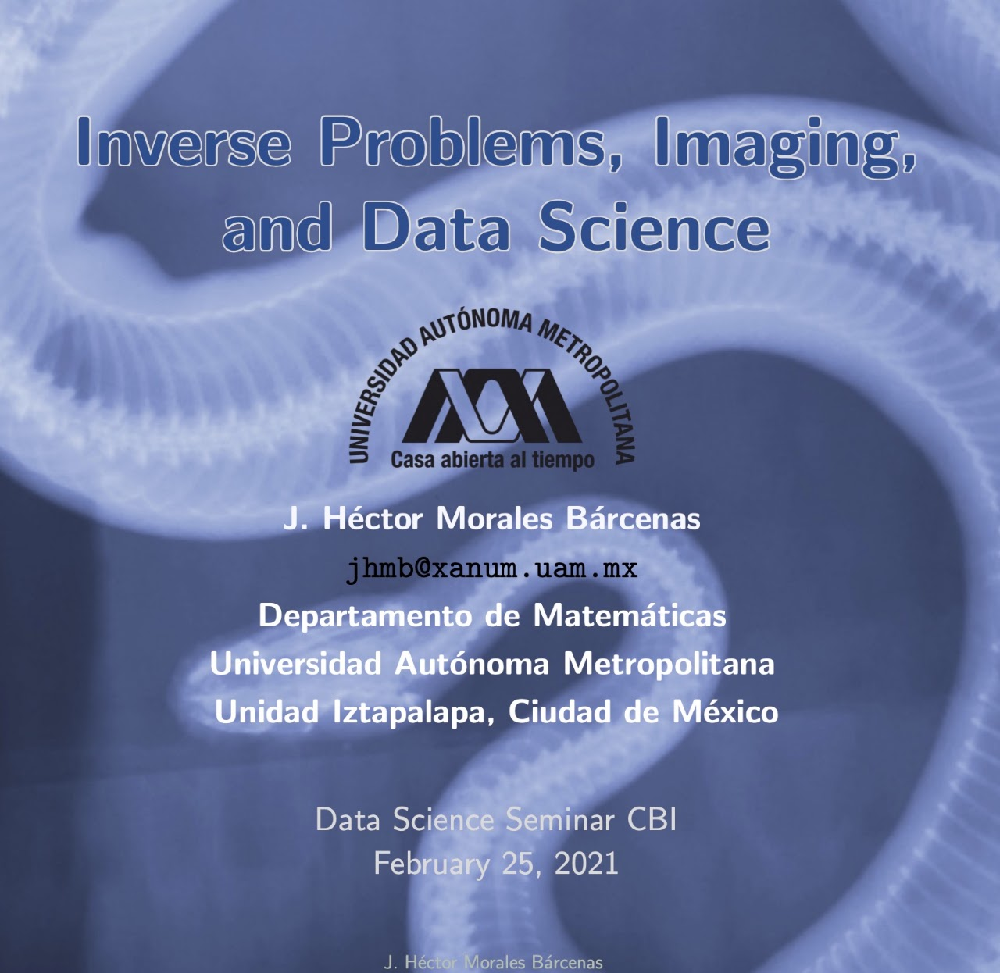

“I had come to an entirely erroneous conclusion which shows, my dear Watson, how dangerous it always is to reason from insufficient data.”

Research Statement
Inverse Problems and Imaging. In general, retrieving information or inferring properties of unknown quantities by indirect observations is called an Inverse Problem. In particular, through radiation traveling across a material body or from a source inside the body, we solve inverse problems — such as determining or estimating physical, geometrical, or biological parameters.
With the retrieved information from the outgoing radiation (echo), we can image the medium and/or radiation sources. Non-invasive methods depend on the development of mathematical algorithms to improve imaging, diagnosis, and non-destructive testing in industry and medicine: ultrasound, radar, sonar, X-rays, emission tomography (PET), computed tomography (CT), seismology, magnetic resonance (MRI), etc. Many aspects of the interaction between matter and radiation are not well understood, mainly in living organisms. There is still much to do and discover in the related mathematical imaging inverse problems.
Biological Physics and Medical Physics · Data Science: Modeling guided by data. The fundamental question of how to construct mathematical models for dynamical systems' evolution from the information contained in time series.
Ongoing Projects & Collaborators
Statistical and Computational Inverse Problems
- Gabriel Núñez, UAM Iztapalapa, Mexico.
- Miguel Angel Moreles, Center for Mathematical Research (CIMAT), Mexico.
- Elisa Domínguez Hüttinger, Institute for Biomedical Research (UNAM), Mexico.
Mathematical Modeling in Medical Physics and Radiomics
- Luis Alberto Medina, Institute of Physics (UNAM) and National Cancer Institute (INCan), Mexico.
Past Visitors
-
Wonsiri Punurai
Faculty of Engineering, Department of Civil Engineering, Mahidol University, Thailand. -
Shin-ichiro Shima
Graduate School of Simulation Studies, University of Hyogo, Japan.
Recorded Seminar Stream
Watch the live-recorded seminar session on YouTube:
Featured Research Talks & Media
Recherche (Français)
J'ai obtenu mon doctorat en mathématiques à Rensselaer Polytechnic Institute (RPI) aux États-Unis. Les sujets de mon intérêt sont la propagation et dispersion des ondes électromagnétiques et acoustiques, problèmes inverses et formation d'images.
Mon travail de dissertation (Ph.D.) est envisagé à la télédétection (« remote sensing ») et au traitement du signal à travers un milieu dispersif. En particulier, le problème a consisté en l'estimation de paramètres physiques des objets placés dans un milieu qui a dispersion dans le temps et bruit. Nous avons implémenté la technique de « radar à synthèse d'ouverture » pour former les images de la surface où sont placés les objets. Pour maximiser le rapport signal sur bruit et le raffinement des images, nous avons employé un filtre adapté (matched filter) et un filtre de Wiener, respectivement. Nous avons estimé numériquement la résolution de l'algorithme de reconstruction.
D'autre part, nous avons étudié aussi la propagation de précurseurs d'onde (champs transitoires). Dans les matériaux biologiques, on a prédit l'existence de précurseurs quand les ondes incidentes avaient une durée très courte (nanosecondes). Quand on augmente la distance de propagation, les précurseurs sont atténués plus lentement que le signal principal (« carrier wave »). Afin d'améliorer la formation des images, nous prenons en considération l'atténuation caractéristique des précurseurs pour développer une théorie sur la forme optimale que doit avoir une onde transmise dans un milieu dispersif.
Comme les matériaux biologiques sont dispersifs, je suis intéressé à continuer ma recherche à propos de l'imagerie médicale, puisqu'elle permet de développer des algorithmes pour améliorer le traitement du signal et aussi poser et résoudre des problèmes de dispersion associés à la propagation des ondes acoustiques ou électromagnétiques.
Problèmes inverses et imagerie médicale. En général, le problème de la récupération d'informations ou de déduire les propriétés de quantités inconnues par des observations indirectes est appelé un problème inverse. En particulier, nous résolvons les problèmes inverses au moyen de rayonnement (ondes de sondage) voyageant à travers un corps matériel ou d'une source inconnue, c'est-à-dire déterminer ou estimer les paramètres physiques, géométriques ou biologiques. Avec les informations récupérées à partir des ondes de sondage, nous avons la capacité d'imager le milieu et/ou les sources de rayonnement : l'échographie, radar, sonar, les rayons X, l'émission de positons (TEP), la tomodensitométrie (TDM), la radioastronomie, la sismologie, la résonance magnétique, etc.
Modélisation de systèmes biologiques et biophysiques · Modélisation empirique. La question fondamentale de savoir comment construire des modèles mathématiques pour l'évolution des systèmes dynamiques à partir de l'information contenue dans les données obtenues expérimentalement.